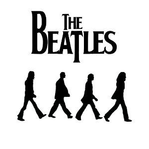
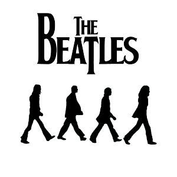

"Mesmo que sentíssemos: 'sim, estamos estabelecidos e conquistamos todos esses países e vendemos muitos discos e
todos eles nos amam', não foi um pensamento: 'vai acabar amanhã', ou 'vai continuar para sempre'. eu nunca tive
esse pensamento. estava acontecendo agora, você sabe. Não era como fazer planos para o futuro. Estava apenas
neste rolo e estávamos todos em nossos vinte e poucos anos e estávamos apenas indo com ele. "
Ringo
"Se você olhar para o nosso itinerário em alguns desses anos em que fizemos talvez uma turnê pela inglaterra,
uma turnê pela europa, uma turnê pela américa, dois álbuns e cerca de quatro eps, e três singles, e fizemos um
filme no mesmo ano - você pensa: 'oh jesus, como fizemos isso?'"
George
"Muitas vezes podíamos confiar em ringo para títulos, porque ringo tinha esse talento feliz de errar as coisas -
pequenos malapropismos - e sempre foi melhor do que o real. alguém disse a ele, você sabe, você parece um pouco
cansado hoje. ele disse: 'sim, eu tive um dia de noite difícil, você sabe'. ele quis dizer isso, e todos nós
dissemos: 'hard day's night, isso é ótimo!'"
Paul
"Eu tinha uma mente que escrevia livros ou histórias engraçadas e outra mente que produzia coisas sobre eu te
amo e você me ama, porque foi assim que Paul e eu fizemos isso, você sabe. Tipo, 'oh, você sabe, vamos escrever
outro deles'."
John
"Hard Day's night foi o primeiro grande que eu fiz. eu tive o benefício de ter um diretor que era músico - dick
lester - que era um bom pianista. e, claro, gravamos as músicas especiais para o filme, já que fazemos apenas
gravações comuns, e dick usou muitas das músicas que eu já havia gravado, você sabe, os álbuns anteriores. can't
buy me love já tinha sido gravado, por exemplo."

 
